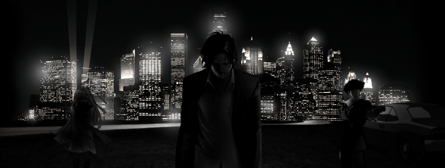

Le Nouva cuenta con el equipo más cualificado en cuanto a seguridad se trata y conforman una parte fundamental en la batalla contra el crimen organizado, aquí les presentamos algunos de sus protagonistas y la labor que desempeñan.

Wesker Vitale: El director de la policía, encargado de todas las operaciones que transcurren en la ciudad relacionadas contra el crimen organizado y el responsable de dar a la prensa los avances en cuanto a los eventos delictivos más importantes.

Spike Russo: Detective que cuenta con una carrera de más de 15 años en el cuerpo, siendo uno de los más antiguos del cuerpo junto a su compañero Ganta. Este se ha visto movilizado en múltiples ocasiones de departamento, participando en operaciones de tráfico, investigación y hasta del cuerpo de bomberos.
Ganta Costa: El detective más entregado que conoce el departamento, gano la medalla al valor hace 6 años por participar en el rescate de Mali Khalap en el incendio de la Fabrica Molister en la calle Morgue.

Glados Di Santi: Encargado del departamento forense, es la responsable de buscar las pistas en las escenas del crimen y brindar información acerca de los cuerpos hallados. Estuvo envuelta hace unos años en un escándalo que la relacionaba directamente con la Morgue Negra, pero ninguna prueba fue hallada de la acusación.